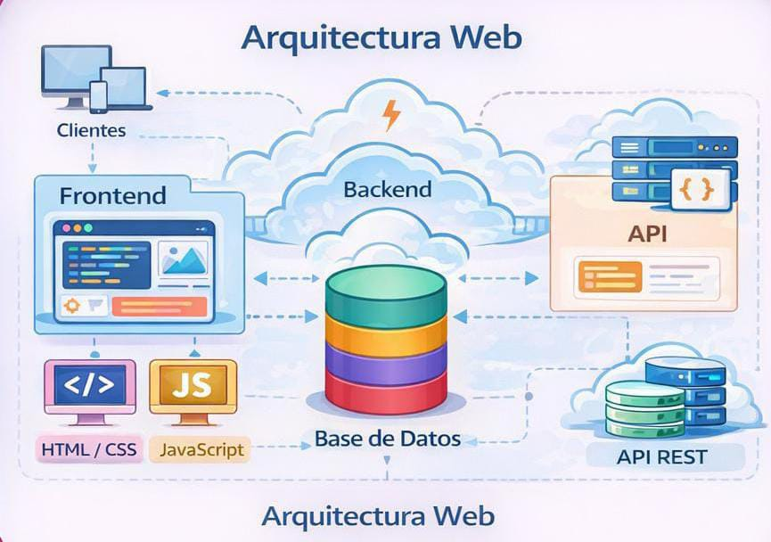
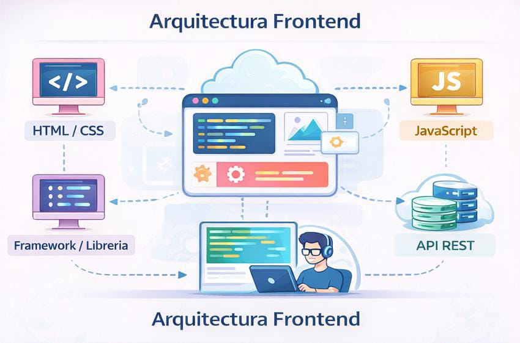

En términos técnicos, una página web es un documento digital diseñado para ser visualizado en un navegador (como Chrome, Safari o Firefox). Está compuesta principalmente por código que le indica al navegador qué mostrar (texto, imágenes, videos) y cómo debe lucir.
La importancia del desarrollo de páginas web no radica únicamente en lo comercial, sino en que:
Es por eso que, con el paso del tiempo, se han desarrollado dos ítems importantes: Arquitectura Web y Arquitectura Frontend. Su importancia radica en que es el punto donde se concretan los procesos del sistema y se evidencian requisitos como rendimiento, seguridad y escalabilidad. Debido a esta criticidad, se requiere una Arquitectura Web que garantice comunicación y manejo adecuado de datos, así como una Arquitectura Frontend que organice el código y controle la complejidad del cliente.
Te invito a que continúes en el siguiente enlace para comprender mejor. ¡Éxitos!
Paginas Web Evolucion webLa arquitectura web es la estructura general que define cómo interactúan todos los componentes de una aplicación web: cliente, servidor, bases de datos y servicios externos.
Desde un punto de vista técnico, establece:

La arquitectura frontend se enfoca específicamente en la organización interna de la parte visual e interactiva que ve el usuario en el navegador.
Desde un punto de vista técnico, establece:

Karol Tatiana Ibarra
Estudiante de quinto semestre de Desarrollo de Software.
© 2026 Proyecto Académico – Arquitectura Web y Arquitectura Frontend.
: